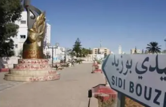
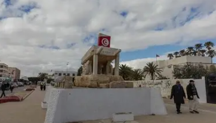
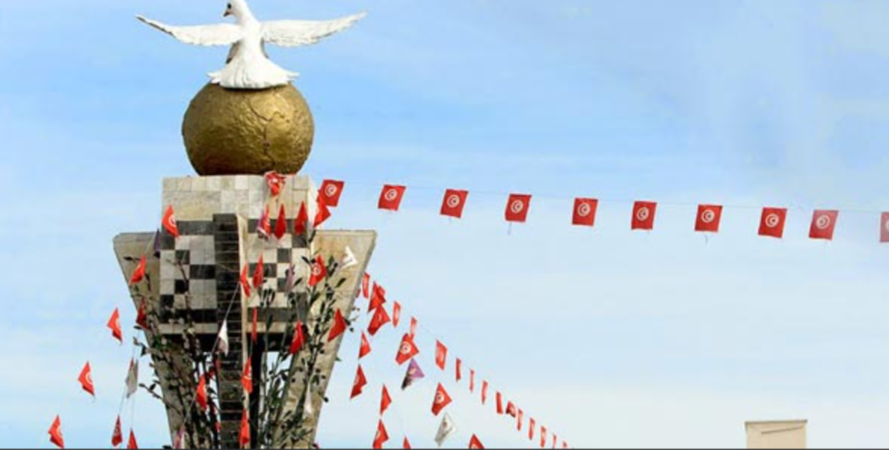

Berceau de la Révolution

Sidi Bouzid est un gouvernorat situé dans le centre de la Tunisie, au cœur de la région agricole de la steppe. C'est une région rurale essentiellement vouée à l'agriculture et à l'élevage, avec de vastes plaines céréalières.
La ville de Sidi Bouzid, chef-lieu du gouvernorat, est entrée dans l'histoire en décembre 2010 comme point de départ de la Révolution tunisienne et du Printemps arabe, un moment décisif pour la région et le monde arabe.
Le gouvernorat se distingue par son rôle historique dans la révolution de 2011, son agriculture intensive produisant céréales et olives, son caractère authentiquement rural, et ses traditions bédouines préservées.
Point de départ de la Révolution tunisienne du 17 décembre 2010 et du Printemps arabe. Symbole de dignité et de liberté pour tout le monde arabe.
Importante production céréalière dans les vastes plaines. Culture de blé dur, orge et légumineuses. Région agricole essentielle pour la sécurité alimentaire tunisienne.
Vastes plantations d'oliviers produisant une huile d'olive de qualité. Oliviers centenaires et exploitation oléicole moderne coexistant dans les plaines.
Traditions nomades et semi-nomades préservées. Élevage de moutons et de dromadaires. Artisanat bédouin traditionnel et hospitalité légendaire.

Monument commémoratif érigé en hommage aux martyrs de la Révolution tunisienne. Lieu de mémoire et de recueillement symbolisant la lutte pour la dignité et la liberté. Point de rassemblement lors des commémorations nationales.

Ville au caractère saharien marqué, porte vers le désert. Puits anciens et architecture adaptée au climat aride. Point de départ vers les paysages steppiques et les zones présahariennes du sud.